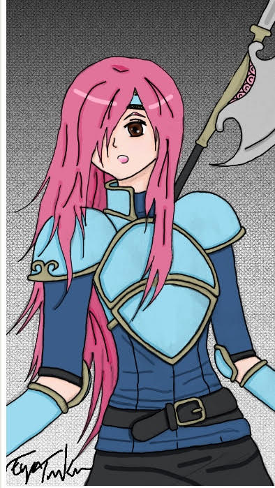

Manan's Story
Welcome to my site!
This is where I share my creations like the story that I'm developing.
Starting over the summmer of 2017, I started to make a story. In this story, I used several examples of Greek Mythology to create my charaters, settings, and important items that relate to the plot.
Characters

This is Lily, one of the main protagonist of my story, who was raised in a nearby village called Ramshack, not knowing that she is the princess of Utopia, this fact will leave her on a big journey where there is sadness and happiness.
Illustration made by my friend, Eya.
Here is a short summary of the main characters
Table of Characters
| Name |
Class |
Weapon of Choice |
Title |
| Lily |
Peaguses Knight |
Lance |
The Lost Princess |
| Mike |
Mercenary |
Sword |
The Protective Villager |
| Apollo |
Paladin |
Lance & Sword |
Fooled Prince |
| Agnus |
Sorcerer |
Anima & Dark Magic |
Royal Witch |
| Hephaestus |
Fighter |
Axe |
Strong as a Bull |
| Artemis |
Archer |
Bow |
Amateur Archer |
| Rhea
| Manakete |
Dragonstone |
Cute but Deadly |

Important Items

This is picture I found on wikipedia is called a Laurel wreath, which is a greek crown. How does this item fit in th story is that it is the main item of the story and unlocks the truth about the Kingdom of Utopia. The person who bears this crown is the main protagonist Lily, so when she wears this crown, she will unlock the power of this crown.
Other important items in the story are
- The Emblem
- The sacred beast weaponds
- Phoenix's wing Sword
- Siren's Song Lance
- Dragon's Breath Axe
- Rhea's tear
- lightning Wing


Plot
In the kingdom of Utopia lived a king and Queen, Ares and Hera, who gave birth to two strong children,
Apollo and Lily. One dreadful night, the castle was ransacked by an unknown mysterious group lead by a malicious sorcerer
named Demeter. The castle and city of Utopia were surrounded and the king and Quee were forced to split up,
Ares having Apollo in his arms and Hera having Lily in hers. Luckily for Hera and her daughter,
they escaped through a secret passageway in the castle, unlike her husband and her son, they were caught.
Hera was all by herself with her daughter in the forest running constantly for her life till she reached a small village to hide
in. Meanwhile, in Utopia, Demeter used her mind-controlling dark powers on the king and brainwashed him,
she didn't bother with Apollo since he was only a few days old. The next few days, the brainwashed Ares engaged to Demeter.
Demeter's cruel lies about how Hera spread quickly, saying she was the one who sent the band of bandits to murder her husband to
have the power of the throne. The people of Utopia believed in Demeter and dubbed her as their new queen of Utopia.
Hera soon got the news and she knew she couldn't go back to Utopia so she left Lily at the village and told the villagers
at the village that she was at that she'll search for him strongest warriors to take back her beloved kingdom.
It became the last time anyone saw Queen Hera for now. Many years passed on and little Lily is now sixteen years old,
living life as a pegasus village girl.


Reference Page
Here are some links I used to help me create these ideas
Names
Classes
Beast Ideas